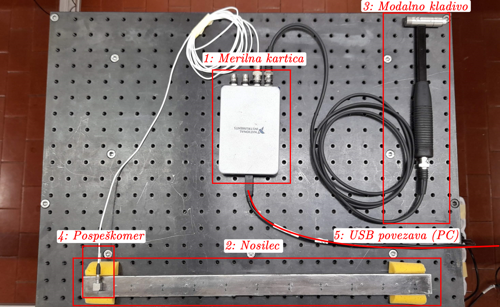
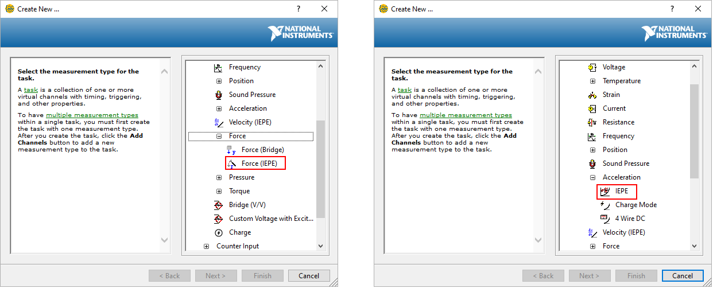
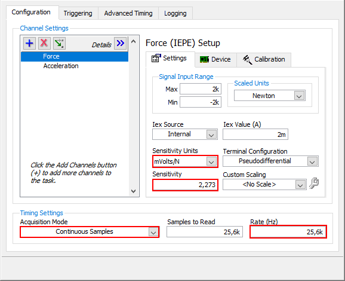
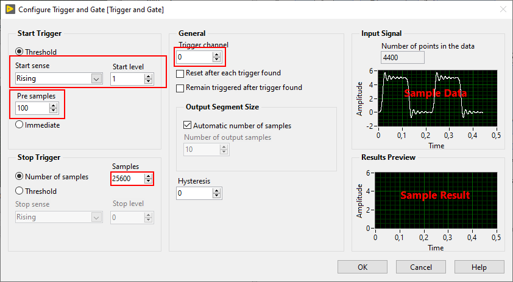
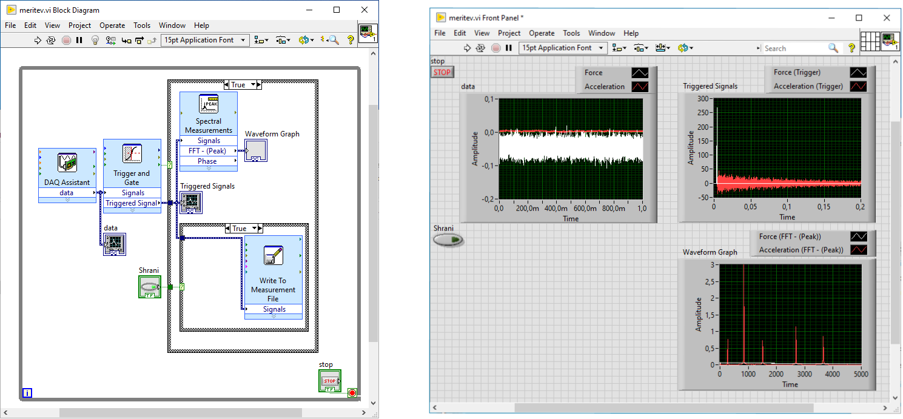
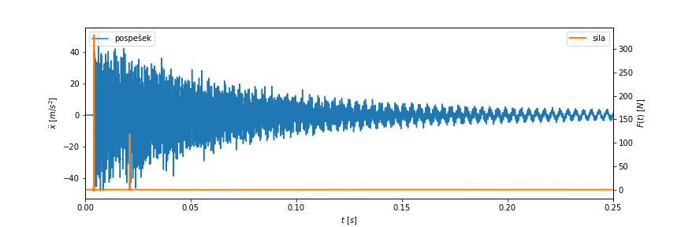

Linear time-invariant systems - signal acquisition#
Homework#
Homework
Prepare a short report (3 to 10 code cells in a Jupyter Notebook environment) that shows the task data (from the table) and that you have taken all the parameters and requirements of the task into account. The report should also contain:
a plot (of the time series and the amplitude spectra) of all the measurements you made in the group (at all the given excitation points), on the same graph,
a plot of the time series and the amplitude spectrum of your measurement (with excitation at the point given in the task data),
a plot of the frequency response function at your measured point (\(i\)), which you estimate as \(H_i(\omega) = X_i(\omega) / F_i(\omega)\).
Submit the report in .pdf format (see the homework submission instructions).
Addendum:
Based on the performed measurement, also determine the impulse response function \(h_i(t)\) of the beam for excitation at your point (\(i\)).
Simulate and plot the response \(x(t)\) of the beam to excitation with a random force signal \(f_i(t)\). Prepare the random excitation signal as you see fit, for example using the
numpy.randommodule.
Note
\(X(\omega)\) and \(x(t)\) in these notes denote the response, \(F(\omega)\) and \(f(t)\) the excitation of the system \(H(\omega)\), and \(H(\omega)\) the frequency response function, without assumptions about the measured physical quantities.
In our case, the measured signals are acceleration and force, so the computed frequency response function takes the form of accelerance.
Frequency response function and impulse response function#
The response model of linear time-invariant (LTI) systems is characterized by so-called response functions, which relate the response and excitation signals of the system in the frequency domain (frequency response function, \(H(\omega)\)) and the time domain (impulse response function, \(h(t)\)), respectively.
The frequency response function \(H(\omega)\) is the ratio between the (complex) amplitudes of the harmonic response and excitation of the observed system:
The impulse response function \(h(t)\) gives the response of the system to an impulse disturbance.
The response to an arbitrary excitation (signal \(f(t)\)) is determined by the following relation:
where \(*\) denotes convolution.
Note
The impulse response function and the frequency response function are a Fourier pair:
Signal acquisition for determining the response functions of a linear time-invariant system#
In the experimental characterization of a linear time-invariant system, we therefore determine the relation between the response of the system and the known excitation signal, based on the measured signals \(x(t)\), \(f(t)\).
The purpose of this exercise is to become familiar with the laboratory equipment and to perform the signal measurements needed to determine the response functions of a mechanical linear time-invariant system.
Task: Measurement of the response functions of a steel beam
Prepare the acquisition system and measure the response (acceleration) of a steel beam to impulse excitation at different points. Each of you should measure the response (acceleration) of the beam with impact hammer excitation at the point given in the task data table, which you can find in Moodle.
The work in the laboratory will be done in groups. The task consists of three parts, described in more detail below:
Setting up and connecting the measurement equipment.
Preparing the LabVIEW program for signal acquisition.
Measuring the excitation force and the system response signals under impulse excitation at different points.
Measurement system#
The measurement setup consists of the following components:
Acquisition card NI 9234:
4 analog input channels (BNC connector).
\(\pm\) 5 V.
Sampling frequency up to 51200 Hz (allowed values: \(51200 / n\), \(n \in [1, 2, 3, \dots, 31]\)).
24-bit resolution.
Steel beam:
Length: 500 mm.
11 marked measurement points (at positions \([25, 475]\) mm, spacing \(45\) mm).
Response measured at location \(0\), excitation at locations \(i \in [1, 2, \dots 10]\).
Impact hammer PCB TLD086C03:
IEPE force transducer.
BNC connection to the analog input of the acquisition card.
Measurement range: \(\pm\) 2224 N.
Sensitivity: value on the instrument box.
Accelerometer PCB 333B30:
IEPE accelerometer.
BNC connection to the analog input of the acquisition card.
Measurement range: \(\pm\) 490 \(m/s^2\).
Sensitivity: value on the instrument box.
Measurement computer (USB connection).
1. Setting up the measurement setup
Connect the measurement setup of the acquisition system. Use the description of the measurement equipment above and the figure below.
When connecting the sensors (accelerometer, force transducer) to the acquisition card, you can use any input channels. Make sure you take your choice into account when setting up the LabVIEW program.

LabVIEW program#
2. Preparing the LabVIEW program
Prepare a LabVIEW program for acquiring the excitation and response signals of the observed beam.
The main acquisition settings are:
Sampling frequency: 25600 Hz,
Length of the acquired signal after each hit: 1 s (25600 points),
Number of pre-samples (saved before the hit is detected): 100,
File saving:
.lvmformat, one hit per segment.
In a loop (until manually stopped), the program should:
Acquire the acceleration and force signals on the appropriate channels of the acquisition card (
Express -> Input -> DAQ Assistant):set up the acquisition of the excitation (“Force (IEPE)”) and the response (“Acceleration IEPE”) on the connected channels,

set the sensitivities of the sensors and the acquisition parameters according to the data,

(you can display the acquired signals as they are acquired (
Right click on the signal -> Create Graph indicator)).
Trigger saving and display when a hit is detected (
Express -> Signal Manipulation -> Trigger and Gate):set the appropriate force level that represents hit detection,
set the appropriate trigger channel (“Trigger channel”),
set the prescribed number of pre-samples (“Pre samples”),
set the appropriate number of samples saved after hit detection (“Samples”).

If a hit is detected (
Trigger and Gate: Data Available), write the set number of samples from the trigger to thelvmfile:make sure that each repetition of the measurement is read as a separate segment of the file (“Segment headers”).
(After a hit is detected, you can display the signal from the trigger on a graph.)
(You can also display a graph of the frequency spectrum of the signal in the trigger (
Express -> Signal Analysis -> Spectral).)
An example of the block diagram and front panel of the completed program:

Measurement#
3. Performing the signal measurement
With a properly prepared LabVIEW program, the acquisition of each segment (hit) is triggered automatically using the trigger (Trigger and gate).
When performing the measurement, make sure that:
you excite the system with a hit at the marked point, in the direction normal to the top surface of the beam,
the force of each hit is not too high (a suitable hit force is \(~200\) N),
there are no multiple hits in the acquired segment (check that the trigger signal contains only a single distinct force peak).
